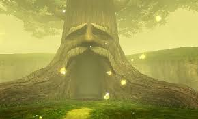

Has despertado y ves un arbol gigante enfrente tuyo, te asustas porque antes de irte a dormir estabas en tu habitación, algo alterado decides preguntarle dónde estás.
El arbol te contesta:
Parece que has despertado, un placer conocerte, me llamo Althor, soy el guardian del bosque, te hemos invocado las deidades de Albion porque necesitamos de tu ayuda, se que tendrás muchas preguntas, pero no hay tiempo que perder, Belheim el zurdo, robó el alma de fuego y se dirige a northmid a por el alma de jade, solo queda el alma de agua, si Belheim consigue las tres almas, será imparable y reinará sobre Albion y todas las tierras cercanas. necesitamos de tu ayuda, ¿Estás dispuesto a ayudar?
